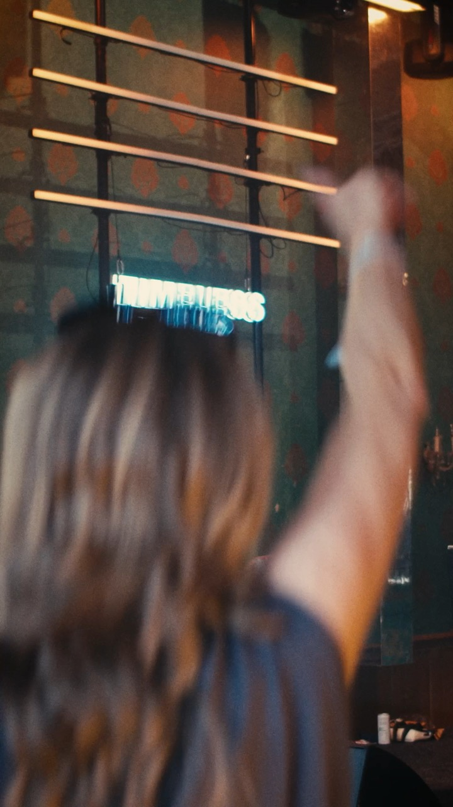

Timeless Tunes
Timeless Tunes, 2026
Auf Instagram und TikTok entscheiden die ersten zwei Sekunden. Ich drehe und schneide Videos im Hochformat, die genau dafür gemacht sind: kurz, schnell und mit klarem Look.
Ich plane den Dreh so, dass aus einem Tag möglichst viele Clips entstehen. Das spart Zeit und Budget, und du hast Inhalte für mehrere Wochen.
Wenn du sowieso ein Event oder einen Imagefilm planst, drehe ich die Hochformat-Clips direkt mit.
Das hängt vom Thema ab. Mit guter Planung entstehen mehrere Clips, die du über Wochen verteilt posten kannst.
Ja. Viele schauen Videos ohne Ton, deshalb gehören Untertitel bei Social Media fast immer dazu.